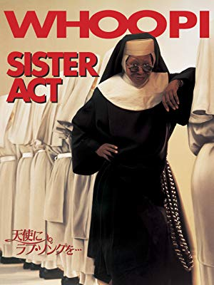
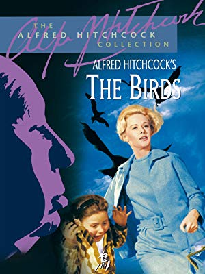
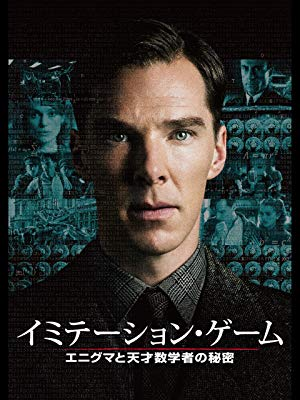
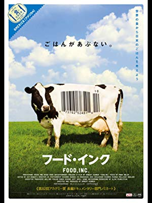
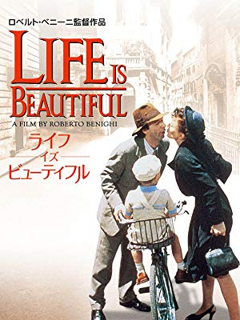

Movie

クラブ歌手のデロリスと修道院の対比が何とも面白いが、デロリスの指導の下、修道女のコーラスが天使のような歌声に変わっていく歌は、思わず聞き込んでしまうほど。今まで見てきたコメディ映画の中で、おそらく一番好きな映画。
天使にラブソングを / 天使にラブソングを２
殺人現場を目撃してしまったクラブ歌手のデロリスは、ギャングに命をねらわれるはめになり、お堅い修道院に身を隠すことになる。最初はおとなしく隠れていたが、聖歌隊のリーダーになって本領を発揮。ヘタクソなコーラスがリズミカルな賛美歌に変わり、テレビ中継までされてしまったが、それにギャングが気づかないわけがない。デロリスの無事は！？（監督：エミール・アルドリーノ）
クラブ歌手のデロリスと修道院の対比が何とも面白いが、デロリスの指導の下、修道女のコーラスが天使のような歌声に変わっていく歌は、思わず聞き込んでしまうほど。今まで見てきたコメディ映画の中で、おそらく一番好きな映画。

小学生の頃、初めてヒッチコックの映画「The birds」を見たが、そのあまりの怖さに途轍もない恐怖を覚えたのは今でも忘れない。まさに、ハリウッドが生み出した恐怖映画のお手本と言えると思う。
The birds
「鳥」はアルフレッド・ヒッチコックのサスペンスドラマの最高傑作だ。美しいブロンドの女性メラニー・ダニエルスが、婚約者のミッチ・ブレナーに会いにボデガ・ベイにやってくる。カモメに襲われる彼女。その後、何千羽もの鳥が町に群れをなしてやってきて、子供や住民たちを襲う。ミッチやメラニーも、何の理由もなく襲う鳥たちの力と戦うのに命をかける。ハリウッドが生み出した恐怖映画のお手本と言える傑作だ。（監督：アルフレッド・ヒッチコック）
小学生の頃、初めてヒッチコックの映画「The birds」を見たが、そのあまりの怖さに途轍もない恐怖を覚えたのは今でも忘れない。まさに、ハリウッドが生み出した恐怖映画のお手本と言えると思う。

チューリングはコンピューターの基礎理論を築き、20世紀最高の頭脳とも称される天才だが、そんな彼が挑戦するモンスターは解読不可能とされるエニグマだ。エニグマを解読できない場合、それはイギリスの敗北を意味するが、そんなプレッシャーに耐えながらエニグマ解読に向け挑戦する姿は、数学というジャンルを越え感動を与えてくれる。
イミテーションゲーム
第二次世界大戦時、ドイツ軍が誇った世界最強の暗号＜エニグマ＞。 世界の運命は、解読不可能と言われた暗号に挑んだ、一人の天才数学者アラン・チューリングに託された。英国政府が50年以上隠し続けた、一人の天才の真実の物語。時代に翻弄された男の秘密と数奇な人生とは――?!（監督：モルテン・ティルドゥム）
チューリングはコンピューターの基礎理論を築き、20世紀最高の頭脳とも称される天才だが、そんな彼が挑戦するモンスターは解読不可能とされるエニグマだ。エニグマを解読できない場合、それはイギリスの敗北を意味するが、そんなプレッシャーに耐えながらエニグマ解読に向け挑戦する姿は、数学というジャンルを越え感動を与えてくれる。
４２
4月15日。その日、大リーグではグラウンドにいる全員が背番号「42」をつける。どのチームの、どの選手も。敵も、味方も、関係なく。「42」――それは、大リーグで唯一の、全球団共通の永久欠番。その裏側に、鳥肌の立つようなドラマがあった。（監督：ブライアン・ヘルゲランド）
冒頭でも紹介したように、タイトルにある４２とは、近代メジャーリーグ初の黒人選手となったジャッキー・ロビンソンの背番号である。当時、MLBは白人しかプレーすることが許されていなかったが、そんな逆境にも負けずロビンソンがMLBで活躍し、黒人の差別的偏見を変えていく姿には胸を打たれる。
アメリカンスナイパー
米軍史上最多、160人を狙撃したひとりの優しい父親。観る者の心を撃ち抜く、衝撃の実話。 国を愛し、家族を愛し、戦場を愛した男――。描かれるのは伝説のスナイパー、クリス・カイルの半生。（監督：クリント・イーストウッド）
国と家族、そして友人を守りたいが為に軍人となったクリス・カイルの物語。その射撃の腕前は「ラマディの悪魔」と怖れられ、2万ドルの懸賞金がかけられたほど。愛する者の為に、命を賭けて戦場に赴き敵と戦うことになるが、彼は帰国後PTSDに苦しまされることになる。正義とは何か、戦争とは誰の為の戦いか、ということについても作品を通し考えさせられる。
ハンナ・アーレント
誰からも敬愛される高名な哲学者から一転、世界中から激しいバッシングを浴びた女性・ハンナ・アーレントは「考えることで、人間は強くなる」という信念のもと、世間から激しい非難を浴びて思い悩みながらも、アイヒマンの＜悪の凡庸さ＞を主張し続けた。半世紀を超えて彼女が本当に伝えたかった＜真実＞が、今明かされる。（監督： マルガレーテ・フォン・トロッタ）
「人は誰しもが悪になり得る」、ユダヤ人を収容所へ移送し続けた主犯アドルフ・アイヒマンの裁判をルポルタージュしたアーレントは、当時あまりに異端なレポートを投稿し、激しい非難を浴びることになるが、それでも自分が思う真実を貫き通す姿勢に思わず心が揺り動かされる。そして映画のラストシーンは見ていて辛くなってしまった…。
殿、利息でござる
百姓や町人へ容赦なく重税を課していた仙台藩。町の将来を心配する十三郎は、知恵者の篤平治から藩に大金を貸し付け利息を巻き上げるという秘策を打ち明けられる。計画が明るみに出れば打ち首確実。必要な資金は千両。現在の3億円という大金を水面下で集める、前代未聞の頭脳戦が始まった。（監督：中村義洋）
本作では重税を課せられる街（宮城の北吉岡）の様子が描かれているが、中でも街道を渡るお上の物資を次の宿場に運ぶ役（伝馬役）を背負わされた宿場にスポットが当てられている。実際にこの話は実話で、街を救いたい一心で大金をかき集める十三郎の思いがひしひしと伝わってくる。ちなみに舞台が仙台とあってか、殿様役は羽生結弦である。

最近、世界でプラスチックの使用を巡り大きな問題となっているが、2011年に公開されたフードインクは、食の安全性を訴える映画だ。安価な食品がスーパーに並ぶその裏には、倫理を顧みない動物飼育・低賃金での労働力の搾取など、多くの問題を実際のインタビューを通して取り上げている。食の安全とお金の関係性について大いに考えさせられる作品。
フード・インク
食品の安全や業界の裏側に鋭く切り込んだフードドキュメンタリー。大規模で飼育・加工される米国の食肉産業の実態や遺伝子組換え食品が及ぼす影響などを明らかにしていく。安価な食品の危険性を訴え、巨大食品会社を真っ向から否定した問題作。（監督： ロバート・ケナー）
最近、世界でプラスチックの使用を巡り大きな問題となっているが、2011年に公開されたフードインクは、食の安全性を訴える映画だ。安価な食品がスーパーに並ぶその裏には、倫理を顧みない動物飼育・低賃金での労働力の搾取など、多くの問題を実際のインタビューを通して取り上げている。食の安全とお金の関係性について大いに考えさせられる作品。

本作の前半では、主人公グイドが後の妻となるドーラにプロポーズをする為アプローチをかけていくが、正直見ていてとても痛々しい。後半になると、グイド一家はドイツ軍に捕まってしまうが、グイドは息子・ジョズエを安心させる為、絶望的な状況をあくまで戦争をゲームに見立て安心させようとする。そのユーモア溢れた献身的な姿勢に思わず涙してしまう映画。
Life Is Beautiful
グイドは愛嬌はあるがヘマばかりしているウエイター。彼は愛する妻と子どもにすべてを捧げる男だ。しかし第二次世界大戦が始まると、彼はその豊かな想像力とあふれるユーモアを、絶望的な運命から家族を救うために使わなければならないのだった。（監督：ロベルト・ベニーニ）
本作の前半では、主人公グイドが後の妻となるドーラにプロポーズをする為アプローチをかけていくが、正直見ていてとても痛々しい。後半になると、グイド一家はドイツ軍に捕まってしまうが、グイドは息子・ジョズエを安心させる為、絶望的な状況をあくまで戦争をゲームに見立て安心させようとする。そのユーモア溢れた献身的な姿勢に思わず涙してしまう映画。
ヒトラー最後の１２日間
1945年4月20日。ソ連軍の砲火が押し寄せるベルリン。ヒトラーとその側近たちは、総統官邸の地下要塞に避難していた。もはや敗戦を疑う者はいなかったが、正常な判断力を失ったヒトラーは、わずかに残った軍勢に戦況の挽回を命じ、惨状をさらに悪化させてゆく。（監督：オリヴァー・ヒルシュビーゲル）
ヒトラーの最後を描いた映画だが、その演技力と迫力は鬼気迫るものがある。到底勝つ見込みが無いと分かりつつも、既に引き返せ無い…そんな状況下でも戦闘を臨むヒトラーの指示に従う軍部の様子は、戦争、そして組織とは何かについて考えさせてくれる。